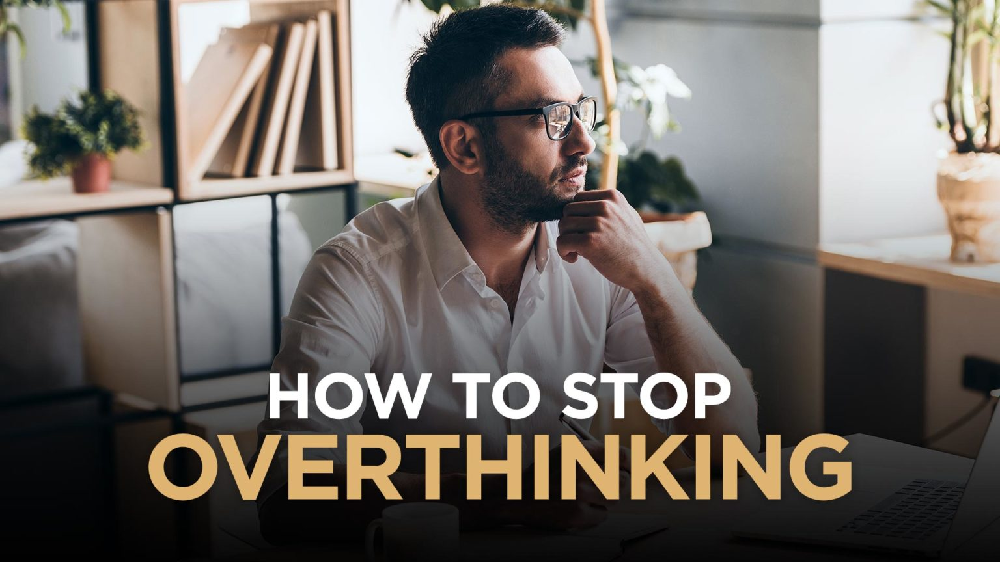

Overthinking - Thoughts which can break you.
It is very common that human brain has continously filled with thoughts from wake up to going back to bed, not even that while in sleep also brain has thoughts but I'm calling it as a dream. But in this blog I'm taking about how are thoughts can leads us to touble while solving a problems.
Many times when we get a problem we start thinking about it. Taking one problem and start to thinking about it is a very good approach but make sure that you are not getting out of the context. If you are stick with the problem, problem get solve in less time than you expected but here comes the overthinking that can harm you, that can frustrated, that can make you sad and that can keep you to unsolve the problem. How dangerous it is, isn't it? I mean a thinking can leads you to a victory and a thinking can also leads you to the Hell as well.
Let me give an example, when you search something you wanted in the browser you will get many result with various links, you click some link and its page open, that pages also has many various link as if you do not stick with what you have been searching then you can click the link that has in that page so its like Web Crawler. We should have to stick to the problem we have been facing, but as our brain is very powerful it has many running processes, it is our reponsibility to allow which processes into our brain while solving a problem. But how overthinking happens? There could be many reasons but what I have been faced are:
1) Forget the context of a problem.
2) Lack of knowlegde, I mean when you don't know needed things about the what is the problem.
3) Other thoughts on mind.
4) Continuosly thinking about the problem without any apporach.
5) You don't have track of what is problem and how to solve it.
6) It could be many more...

1) Keep the track of what is a problem and your approach.
2) Take 5-10mins breaks when you feel frustrated, give those time to yourself.
3) Ask yourself are you on right track.
4) Discuss about problem with someone.
5) Keep a smile on face :).
I just wanted to tell you that "THOUGHTS ARE VERY HELPFUL IF YOU CAN CONTROL".
Thank You!